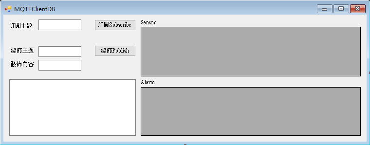

實踐大學聯網感測實作
開發環境This project is maintained by yazelin
滴水穿石，不是水多厲害，更不是石頭不厲害，而是時間太厲害。

// including the MySQL Library
using MySql.Data.MySqlClient;
//在public partial class Form1 : Form { } 中加入下面2個宣告
delegate void addmysqlCallback(string topic, string msg);//用來更新新增至MySQL的Callback
String Record_time;//紀錄資料加入的時間
//連線參數
//資料來源:localhost
//port:3306
//選擇某個資料庫:log
//使用者名稱:root，密碼：無
//建立MySQL連線
MySqlConnection connection = new MySqlConnection("datasource=localhost;port=3306;Initial Catalog='log';username=root;password=");
//連線參數
//資料來源:本機localhost
//port:3306
//選擇某個資料庫:test_log
//使用者名稱:root，密碼：無
//建立MySQL連結參數
MySqlConnection test_connection = new MySqlConnection("datasource=localhost;port=3306;Initial Catalog='test_log';username=root;password=");
}
//當視窗載入時觸發
private void Form1_Load(object sender, EventArgs e)
{
connection.Open(); //連結MySQL的log資料庫
test_connection.Open(); //連結MySQL的test_log資料庫
SelectMySQL(connection, "alarm", alarm_dataGridView);// 查詢alarm資料表的方法
SelectMySQL(connection, "sensor", sensor_dataGridView);// 查詢sensor資料表的方法
SelectMySQL(test_connection, "test_alarm", test_dataGridView);// 查詢test_alarm資料表的方法
//subscribe
//訂閱訊息與異常紀錄
client.Subscribe(new string[] { "Sensor", "Alarm" }, new byte[] { 0, 0 }); // we need arrays as parameters because we can subscribe to different topics with one call
SetText("");//將RecText.TextBox清空
}//查詢某一個資料表的方法
private void SelectMySQL(MySqlConnection connection, string tablename, DataGridView datagrid)
{
//load mysql data to dataGridView
//查詢資料表的select語法
string select_Query = "SELECT * FROM " + tablename + " ORDER BY _AI DESC LIMIT 15";
//在記憶體建立新的table空白表格
DataTable table = new DataTable();
//MySqlDataAdapter類別用connection去查詢MySQL的資料
MySqlDataAdapter adapter = new MySqlDataAdapter(select_Query, connection);
//查詢後的adapter填入table
adapter.Fill(table);
//table顯示在dataGridView的DataSource
datagrid.DataSource = table;
//dataGridView欄位依照內容長短調整欄寬
datagrid.AutoSizeColumnsMode = DataGridViewAutoSizeColumnsMode.Fill;
}
//新增資料至某個資料表的方法
private void insert(MySqlConnection oneofconnection, string oneoftablename, string oneofmsg)
{
Record_time = String.Format("{0:yyyy/MM/dd HH:mm:ss}", DateTime.Now);
string insertQuery = "INSERT INTO " + oneoftablename + "(Record_time,Message) VALUES('" + Record_time + "','" + oneofmsg + "')";
MySqlCommand command = new MySqlCommand(insertQuery, oneofconnection);
command.ExecuteNonQuery();
}
private void insertbtn_Click(object sender, EventArgs e)
{
//新增message_textBox.Text至test_alarm的資料表
insert(test_connection, "test_alarm", message_textBox.Text);
//查詢test_alarm資料表的方法
SelectMySQL(test_connection, "test_alarm", test_dataGridView);
}
private void selectbtn_Click(object sender, EventArgs e)
{
//查詢test_alarm資料表的方法
SelectMySQL(test_connection, "test_alarm", test_dataGridView);
}
// this code runs when a message was received
void client_MqttMsgPublishReceived(object sender, MqttMsgPublishEventArgs e)
{
string ReceivedTopic = e.Topic.ToLower();//收到的主題轉成小寫
string ReceivedMessage = Encoding.UTF8.GetString(e.Message);//收到的訊息內容以UTF8編碼
addmysql(ReceivedTopic , ReceivedMessage);//收到資料後觸發addmysql()方法以ReceivedTopic和ReceivedMessage帶入
// we need this construction because the receiving code in the library and the UI with textbox run on different threads
//將主題與訊息寫進接收訊息框內，但因為MQTT接收的執行緒與UI執行緒不同，我們需要呼叫自訂的SetText函式做些處理
SetText(ReceivedTopic+":"+ReceivedMessage);
}
//當兩個不同執行緒上需要更新數值時的處理
private void addmysql(string topic, string msg)
{
// we need this construction because the receiving code in the library and the UI with textbox run on different threads
if (this.RecText.InvokeRequired)
{
//如果需要Invoke
//設定CallBack,Invoke
addmysqlCallback d = new addmysqlCallback(addmysql);
this.Invoke(d, new object[] { topic, msg });
}
else
{
//若不需要Invoke直接新增至MySQL
//新增資料至主題對應的資料表
insert(connection, topic, msg);
//查詢主題對應的資料表
SelectMySQL(connection, topic, (DataGridView)this.Controls.Find(topic + "_dataGridView", true)[0]);
}
}
//當視窗關閉時
private void Form1_FormClosing(object sender, FormClosingEventArgs e)
{
client.Disconnect();//中斷連線
connection.Close(); //與MySQL的log資料庫斷線
test_connection.Close();//與MySQL的test_log資料庫斷線
}